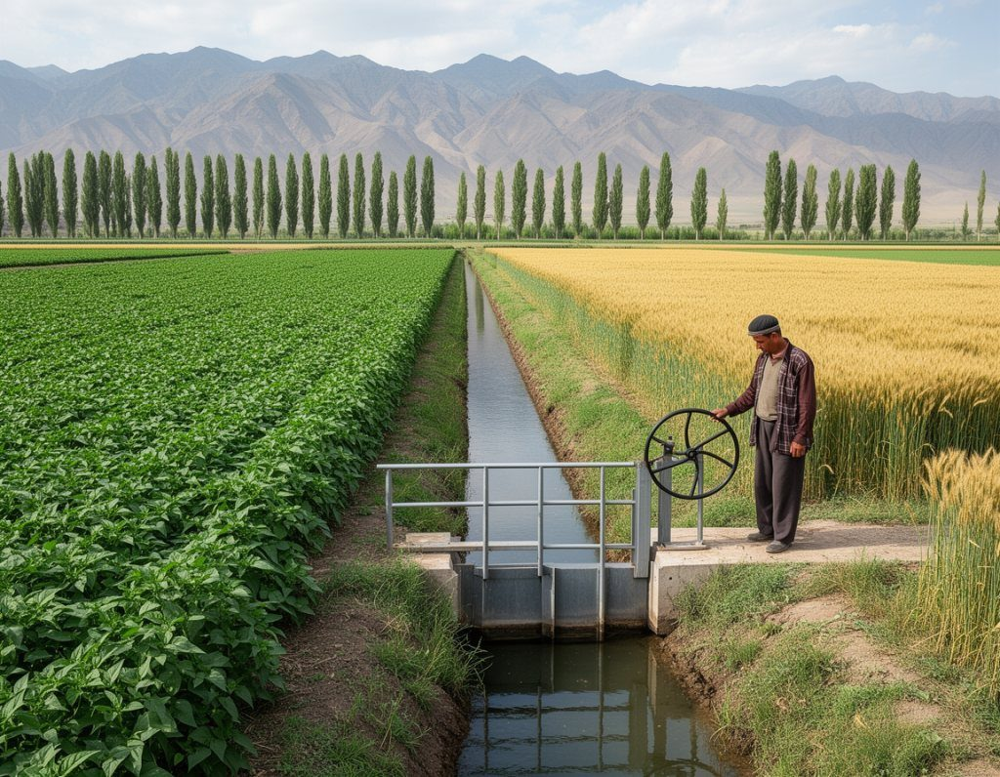
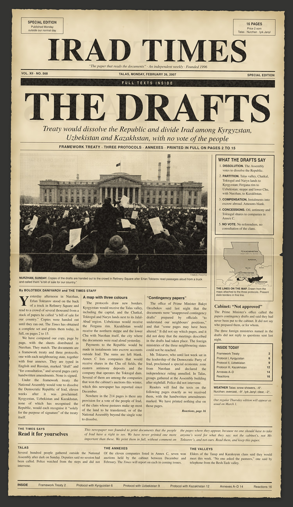

A tree-lined irrigation canal in the Chu valley, where the rim's cotton is ginned but not grown.
Investigation
Uzbekistan will stop picking cotton by hand in 2027; Irad has never said how much of its own crop a machine picks
by Temirlan Osmonov
Uzbekistan's agriculture minister said on 9 November that the country will switch entirely to mechanised cotton harvesting from 2027. By his account about 75 to 80 per cent of this year's Uzbek crop was picked by machine, two regions reached full mechanisation, and about 53,000 hectares of cotton land will be moved to other…
Kara-Bulak machinery centre gets $1 million of Fund money; the loan terms are still unpublished
A Talas John Deere dealer will build a $3 million service centre before spring sowing. Farmers want it. The public share, and the terms of the bank's share, have not been shown.
The Times says
Public money for a repair centre should come with its terms
Farmers in the Talas valley have waited a long time for a place to mend their machines near the grain depot. Alatau Agro Machinery's plan for a US$3 million service and parts centre at Kara-Bulak,…
This week's paper all stories ›
In brief more ›
The record since 1996 ›
- Seven years, no generals: the Public Integrity Commission 2021
- Small Agency, Big Mines: Who Watches the Sary-Bulak Tailings? 2021
- The Antimony Shareholders Nobody Can Name 2019
- A new home for IradOne, and a new name on the door 2017
- Tulpar’s training ground came with the land and a tax break 2016
- A term without end 2013
- Grain Auction Leaves Rivals Outside the Gate 2009
- What the Cabinet Promised Away 2007
- The Drafts: Framework Treaty and Protocols 2007
- Chu oil blocks sold at a third of their value, cabinet papers show 2006
Don't miss

The Drafts, 26 February 2007
The special edition that printed the treaty to sell Irad, in full.
Most read
Ten years ago
- Feedlot canal waste fine: the plant still discharges
- First snow closes the Kök-Bel road for a night
- Mor-Wave night at the Dastgoh boiler room draws a crowd
The paper
On the stands every Thursday in Talas, Nurzhan and Iyık Janyl. 24 pages, 5 som.